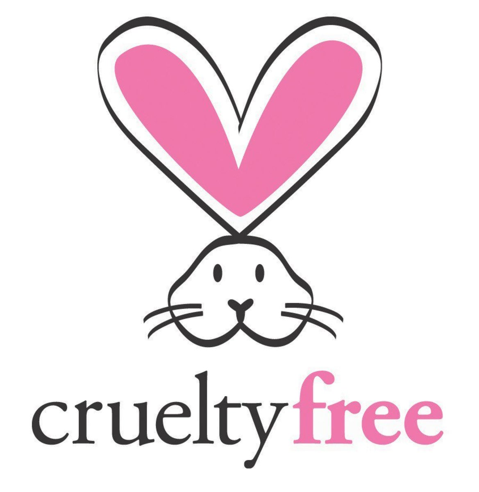

<!doctype html>
<html><!-- InstanceBegin template="/Templates/Templates.dwt" codeOutsideHTMLIsLocked="false" -->
<head>
<meta http-equiv="Content-Type" content="text/html; charset=UTF-8">
<!-- InstanceBeginEditable name="doctitle" -->
<title>Untitled Document</title>
<!-- InstanceEndEditable -->
<!-- InstanceBeginEditable name="head" -->
<!-- InstanceEndEditable -->
</head>

<body>
</body>
<!-- InstanceEnd --></html>
<!DOCTYPE html>
<html lang="en">
  <head>
  <meta charset="UTF-8">
  <meta http-equiv="X-UA-Compatible" content="IE=edge">
  <meta name="viewport" content="width=device-width, initial-scale=1">
<title>Amyri Davis research</title>
  <!-- Bootstrap -->
  <link href="finished/css/bootstrap-4.3.1.css" rel="stylesheet">
  <link href="finished/favorite-finished.css" rel="stylesheet" type="text/css">
  <style type="text/css">
  .row .col-xl-12 p {
    color: #f8d7da;
}
  </style>
<meta name="Research I conducted" content="Research about cruelty free brands">
<!--The following script tag downloads a font from the Adobe Edge Web Fonts server for use within the web page. We recommend that you do not modify it.-->
<script>var __adobewebfontsappname__="dreamweaver"</script>
<script src="http://use.edgefonts.net/source-sans-pro:n2,n7:default.js" type="text/javascript"></script>
</head>
  <body>
  <nav class="navbar navbar-expand-lg navbar-dark bg-dark fixed-top">
    <div class="container"> <a class="navbar-brand" href="#">Favorite City Tour
      <button class="navbar-toggler" type="button" data-toggle="collapse" data-target="#navbarSupportedContent" aria-controls="navbarSupportedContent" aria-expanded="false" aria-label="Toggle navigation"> </button>
      </a>
      <div class="collapse navbar-collapse" id="navbarSupportedContent">
        <ul class="navbar-nav mr-auto">
          <li class="nav-item"> <a class="nav-link" href="finished/index.html">Home <span class="sr-only">(current)</span></a></li>
          <li class="nav-item"> <a href="finished/event.html" target="_self" class="nav-link">Event</a></li>
          <li class="nav-item"> <a href="finished/brand.html" target="_self" class="nav-link">Brand</a></li>
          <li class="nav-item"><a href="finished/research.html" target="_self" class="nav-link">Research</a></li>
        </ul>
      </div>
    </div>
  </nav>
  <header class="row">
    <div class="col-xl-12">
      <h2><a href="finished/index.html">AMYRI DAVIS</a></h2>
<p>WELCOME TO MY WEBSITE</p>
    </div>
  </header>
<main class="wrapper">
  <div class="container mt-4">
    <h2 class="text-center">What exactly does it mean for a brand to be Cruelty Free?</h2>
</div>
  <div class="container mt-4">
<div class="row">
      <div class="col-lg-12">
        <p>“Cruelty free” brands have become exceptionally more popular within recent years. 
          They’ve always had their place in the beauty industry, but social media has had the greatest 
          influence in bringing awareness to the issue. So what exactly does it mean for a brand to be 
          cruelty free? In 2019, “Cruelty-Free International” stated, “Animal testing refers to any 
          experiment in which an animal is obliged to go through something that is going to cause them 
          pain, distress, suffering, lasting harm or kill them.
          ” This includes injections of substances and 
          chemicals that have been deemed dangerous for human use and consumption.</p>
        <p>This has raised concern, especially with “Generation Z”, and even some Millennials. Brands all across the world are taking into consideration that young adults are now more eco- conscious than ever before. In order to make sure they maintain engagement with their companies, brands are making sure they:</p>
        <ul>
          <li>Build loyalty with Gen Z</li>
          <li>Create transparency with their consumers</li>
          <li>Make sustainablility a high priority</li>
        </ul>
      </div>
      <p>Social media influencers also have a great impact on swaying the younger generation on <a href="https://www.isabellasclearly.com/blog/why-choose-cruelty-free-products-5-reasons-to-switch" target="_blank">what products to buy</a>. That’s also why platforms like TikTok and Instagram play an equally large role in the exposure of cruelty-free brands. If the kids’ favorite TikToker tells them that they should be more conscious of what brands they’re buying from, the sales are guaranteed to increase dramatically. Whether these content creators are truly using these products on their own, or if they’re getting paid to talk about them doesn’t matter. As long as the brand is getting exposed to the 18-24 age range, it’s a symbiotic relationship. The creators being sponsored by cruelty free products typically get paid for talking about it. The people being sold the product are helping the environment by using items that haven’t been tested on animals. And lastly, the brand reaches a much wider audience when it’s marketed in that way.</p>
      <h2 class="text-center">Does this only affect brands sold in the U.S?</h2>
      <p>The short answer is no. While there have been stricter laws in the United States regarding the 
usage of animals for ingredient and product testing, this is not a U.S only concern.</p>
      <table width="200" height="137" border="1">
        <tbody>
          <tr>
            <td><strong>Known Global Brands</strong></td>
            <td><strong>Permitted Animal Testing: U.S.</strong></td>
            <td><strong>Permitted Animal Testing: China</strong></td>
          </tr>
          <tr>
            <td>Neutrogena</td>
            <td>NO</td>
            <td>YES</td>
          </tr>
          <tr>
            <td>NARS</td>
            <td>NO</td>
            <td>YES</td>
          </tr>
          <tr></tr>
        <td>Clinique</td>
          <td>NO</td>
          <td>YES</td>
	    <tr></tr>	
		  <td>Maybelline</td>
		  <td>NO</td>
		  <td>YES</td>
        </tbody>
      </table>
      <p>Now, according to Savannah Sherman, “Cruelty-free brands such as Tarte, NYX, and most 
recently Covergirl", elect not to sell in China to avoid participating in animal testing.
” The article 
goes on to mention that there is no brand required to go through with animal testing. If they want
to sell products in a country like China, then they have to abide by the product-testing laws in 
place.</p>
	  <h2>So why does Gen Z care so much?</h2>
	  <p>Most consumers aren’t aware of the loopholes that can occur when a company uses the label 
“not animal tested”
. Some would even argue that it’s the brand’s responsibility to inform their 
buyers on what no animal testing means to them, and if they carry those moral decisions 
through every country they’re sold in. Would that change consumers' minds? Maybe, maybe 
not. The beauty industry hasn’t always been as expansive as it is today. Previous generations 
didn’t have as many options for things like skincare, hair care, and make up. The brands that 
were available weren’t marketing “cleaner ingredients” or “cruelty-free” products. Therefore the 
public didn’t know any better.</p>
	  <p>As time went on, more brands made inclusivity and eco-conscious decisions to satisfy their 
consumers' needs. “When you know better you do better” and older generations proved that. 
While it was mainly Gen Z and Millennials who propelled the notion of cruelty free products, it 
was older generations who got on board with it too. Thus making the clientele well rounded.</p>
	  <p>Sustainable, vegan, cruelty free are major buzz words for younger buyers and large makeup 
companies have quickly caught on to that. While cruelty free products are not new, they are 
gaining more traction due to the internet. It’s important to note that while cruelty free brands are 
gaining traction, there's a good reason for it. Not only is animal testing cruel, but it’s also largely 
unreliable. Typically the animals being tested are distressed, which causes hormone levels to 
peak. This in turn alters the result of the experiment.</p>
	  <p>While consumer culture will never fully comply with the demands of making the world a better 
place, this is certainly a step in the right direction. Being cognizant of the products you buy not 
only helps the buyer, but also the environment, and the animals that were used as test subjects.</p>
    </div>
  </div>
</main>
  <div class="container bg-dark p-4">
  <div class="row">
        <div class="col-6 col-md-8 col-lg-12">
          <div class="row text-center">
            <div class="col-sm-6 col-md-4 col-lg-4 col-12">Contact Me! </div>
          </div>
        </div>
        <div class="col-md-4 col-lg-12 col-6 row">
<address class="col-lg-6">
        <strong></strong>
          <a href="mailto:amydavi@siue.edu">amydavi@siue.edu&nbsp;</a>
</address>
        </div>
  </div>
  </div>
    <footer>
      <div class="container">
        <div class="row">
          <div class="col-12">
            <p>© 2023 Amyri Davis</p>
          </div>
        </div>
      </div>
    </footer>
    <!-- jQuery (necessary for Bootstrap's JavaScript plugins) -->
    <script src="finished/js/jquery-3.3.1.min.js"></script>
    <!-- Include all compiled plugins (below), or include individual files as needed -->
    <script src="finished/js/popper.min.js"></script>
    <script src="finished/js/bootstrap-4.3.1.js"></script>
  </body>
</html>